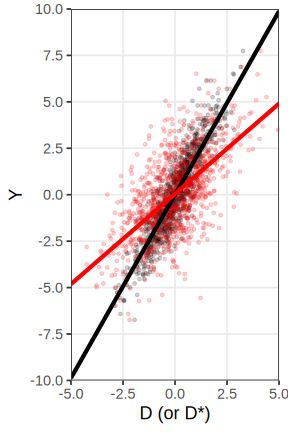
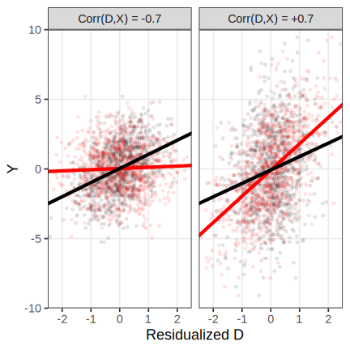

A Tutorial on Causal Inference with Error-Prone Variables
Authors
Je Hoon Chae (UCLA)
Daniela R. Amaya (UCLA)
Published
June 15, 2025
Introduction
In efforts to draw causal inferences from empirical data, researchers routinely address methodological challenges such as unobserved confounding, selection bias, and post-treatment variables. Yet, the problem of measurement error—particularly in key covariates or treatment variables—remains comparatively underexamined. Even when investigators include all theoretically relevant and observable confounders in their analytic models, the presence of measurement error compromises the validity of such adjustments. A covariate measured imprecisely no longer serves as a reliable control; rather, it behaves as if partially unobserved, thereby reintroducing bias into the causal estimation process. In this sense, the reliability of measurement serves not merely as a technical detail, but as a conceptual bridge between observed and unobserved confounding: the lower the reliability, the greater the extent to which measured covariates recede into the background as effectively unmeasured sources of bias.
Measurement error is an endemic feature of empirical work. Researchers often rely on imprecise instruments—be it due to respondent misreporting, interviewer error, or limitations of the survey instrument itself. For example, demographic variables may be inaccurately recorded through careless administration, proxy measures may be used for constructs that are difficult or impossible to observe directly, or the target variable is inherently latent, such as depressive symptoms or political ideology, and thus intrinsically noisy even under ideal measurement conditions.
This tutorial pursues two objectives. First, through a series of simple simulations, we demonstrate the consequences of measurement error in covariates and treatment variables on causal effect estimation. We show how such errors bias the target estimand and undermine standard analytic procedures. Second, we introduce two widely applicable adjustment strategies—regression calibration and control variates—that leverage validation subsamples containing accurate measurements. These techniques offer practical tools for mitigating the deleterious effects of measurement error and restoring inferential credibility.
Notations
Throughout this tutorial, we adhere to a consistent notational convention. Let \(D_i\) denote the treatment assignment for unit \(i\), where \(d \in \{0, 1\}\) in the binary case. While our discussion centers on binary treatments, the analytical framework extends in a straightforward manner to settings involving multi-valued or continuous treatments. The potential outcome corresponding to treatment level \(d\) for unit \(i\) is denoted by \(Y_{di}\). Under a binary treatment regime, the observed outcome follows the canonical switching equation: \(Y_i = D_i Y_{1i} + (1 - D_i) Y_{0i}\).
We represent observed covariates by \(X_i\) in the univariate case, and by \(\textbf{X}_i\) when referring to a vector of pre-treatment characteristics for unit \(i\). To distinguish true values from their imperfect or proxy counterparts, we adopt the conventional notation of appending an asterisk. Accordingly, \(X_i^*\) denotes a noisy or error-prone measurement of \(X_i\), and \(D_i^*\) refers to a mismeasured or surrogate version of the treatment variable \(D_i\).
Finally, in empirical contexts where validation subsamples are available—that is, subsets of the data for which gold-standard measurements of treatment or covariates are obtained—we define an indicator variable \(S_i\), such that \(S_i = 1\) if unit \(i\) is included in the validation sample, and \(S_i = 0\) otherwise.
Measurement Errors in DAGs and Potential Outcomes
What are the implications of measurement error for the causal system under investigation, and how do such errors alter the assumptions on which causal identification rests? To clarify these consequences, consider the three directed acyclic graphs (DAGs) presented below.
(A) No Measurement Error
Panel A represents the canonical scenario in which adjusting for an observed confounder \(X\) is sufficient to block all backdoor paths between the treatment variable \(D\) and the outcome variable \(Y\)—a standard selection-on-observables case. Here, causal identification relies on the assumption that the potential outcome is conditionally independent of treatment assignment given \(X\): \(Y_{d} \indep D \mid X\).
(B) Measurement Error in Treatment
Panel B introduces a scenario in which the treatment variable \(D\) is not directly observable. Instead, researchers only have access to a proxy or noisy measure, denoted \(D^*\). The red-colored node in the DAG emphasizes this departure. Conceptually, this reflects a situation where \(D\) is a latent variable and \(D^*\) is an imperfect manifestation of it. The question that arises, then, is whether the identifying assumption in terms of observable quantities still holds: namely, can we infer that \(Y_{d} \indep D^* \mid X\) from our knowledge that \(Y_{d} \indep D \mid X\)? The answer is not straightforward, as measurement error in the treatment variable may distort the assignment mechanism in nontrivial ways.
(C) Measurement Error in an Observed Confounder
Panel C mirrors the logic of Panel B but shifts the locus of error to the confounder. Here, it is \(X\) that is unobserved, with \(X^*\) serving as an error-prone proxy. Although we may believe that \(Y_{d} \indep D \mid X\) holds, we must now ask whether this assumption extends to the available data—that is, whether \(Y_{d} \indep D \mid X^*\) is a valid identifying condition. This depends, in part, on our understanding of the measurement error generation processes—that is, the nature of the relationship between \(X\) and \(X^*\).
At first glance, Panels B and C may appear symmetrical in form, both involving a single measurement error pathway. However, as we will demonstrate in the following sections, even under simplified conditions—where measurement error arises from classical noise (i.e., random variance without systematic bias)—the implications for causal estimation differ markedly depending on whether the error resides in the treatment or in the confounder.
Example: Measurement of College and Family SES with Proxy Variables
Before proceeding to more formal discussions, it is helpful to consider a concrete example that illustrates the conceptual stakes of measurement error in causal inference. Consider a simplified model of the causal effect of college on future earnings as. In this context, one’s family socioeconomic status (SES) is a plausible confounding variable, as it influences both the likelihood of attending college and subsequent income. Represented as a DAG, this setup would include arrows from SES to both college attendance and earnings.
(A) No Measurement Error
Now consider a scenario in which the treatment variable—college education—is measured with error. Suppose the dataset includes a binary indicator, \(CollegeDegree\), denoting whether an individual obtained a degree. In a scenario where a student attended say 3 years of college but did not graduate, they would appear as untreated in the data but their exposure to college could still be influencing their future earnings. Thus, the treatment variable is measured with error. And this is identical to consdiering the following DAG as the causal system that should be considered to use to justify the assumptions.
(B) Measurement Error in Treatment
Next, consider measurement error in the confounder. SES is notoriously difficult to define precisely and even harder to measure comprehensively. For the case wherein we can’t measure the complete items related to the SES conprehensively we can rely on the data that should be similar but not necessaryily identical with the SES, such as FAFSA (Free Application for Federal Student Aid) records, which summarize family income and assets. While FAFSA data are informative, they capture only a subset of the multidimensional construct that SES entails. In such cases, we are adjusting for \(FAFSA\), a noisy or partial representation of the true confounder. The corresponding DAG would reflect this distinction, with an arrow from latent SES to its observable proxy.
(C) Measurement Error in an Observed Confounder
What Happens If We Ignore Measurement Error?
In the domain of causal inference, the central concern with measurement error lies not in its mere existence, but in its consequences for the estimation of the causal estimand of interest. Measurement error becomes substantively meaningful only insofar as it compromises the validity or efficiency of our estimates. If the presence of such error in the treatment or in observed confounders has negligible influence on the target estimand, it may reasonably be considered a secondary issue.
In what follows, we employ simple simulation exercises to explore the ramifications of ignoring measurement error—first in the treatment variable, and then in the confounders. In both cases, we restrict attention to classical measurement error, characterized by random noise rather than systematic bias. This focus allows us to examine the inferential distortions introduced by variance-based error in isolation, thereby offering an intuitive understanding of when and how such imperfections matter for causal estimation.
Measurement Error in Treatment (aka Attenuation Bias)
Although stylized and somewhat removed from many empirical contexts, consider a simplified case in which the causal structure is fully captured by the direct relationship \(D \to Y\). In such a setting, where no confounding is present, merely observing the treatment variable \(D\) and the outcome \(Y\) is sufficient for causal identification. Researchers interested in estimating the causal effect of \(D\) on \(Y\) might then fit the following OLS model: \[
Y_i = \alpha + \tau D_i + \varepsilon_i,
\] where \(\tau\) represents the causal estimand of interest. Now suppose, however, that the treatment variable \(D_i\) is measured with error, and the researcher observes only a noisy proxy \(D_i^*\). In this case, the model estimated in practice becomes: \[
Y_i = \alpha^{\text{ep}} + \tau^{\text{ep}} D_i^* + \varepsilon_i^{\text{ep}},
\] where \(\tau^{\text{ep}}\) is the coefficient obtained from regressing \(Y\) on the error-prone version of the treatment. The key question is how this naive estimator \(\hat{\tau}^{\text{ep}}\) compares to the true causal effect \(\tau\) when the measurement error in \(D_i^*\) is ignored.
To illustrate this, we conduct a simulation where the true treatment effect is \(\tau = 2\), and the continuous treatment variable \(D\) is measured with error such that \(D^* = D + u\), with \(u \sim \mathcal{N}(0, 1)\). Although \(D\) is treated as continuous for ease of interpretation, the underlying logic holds for binary treatments as well.
Code
if (!require("pacman")) install.packages("pacman")pacman::p_load(tidyverse, patchwork)set.seed(2025)n <-1000tau_true <-2sigma_d <-1sigma_u <-1sigma_eps <-1# Data generationD <-rnorm(n, 0, sigma_d)u <-rnorm(n, 0, sigma_u)D_star <- D + ueps <-rnorm(n, 0, sigma_eps)Y <- tau_true * D + eps# Create long-format data for ggplotdf <-data.frame(Y = Y,D_true = D,D_star = D_star)# Regression fitsfit_true <-lm(Y ~ D_true, data = df)fit_star <-lm(Y ~ D_star, data = df)# Predictions for plotting regression linesd_seq <-seq(-5, 5, length.out =200)pred_true <-predict(fit_true, newdata =data.frame(D_true = d_seq))pred_star <-predict(fit_star, newdata =data.frame(D_star = d_seq))df_lines <-data.frame(D = d_seq,Y_true = pred_true,Y_star = pred_star)# Plotp <-ggplot() +geom_point(aes(x = D, y = Y), alpha =0.2, color ="black") +geom_point(aes(x = D_star, y = Y), alpha =0.2, color ="red") +geom_line(data = df_lines, aes(x = D, y = Y_true), color ="black", size =2) +geom_line(data = df_lines, aes(x = D, y = Y_star), color ="red", size =2) +labs(x ="D (or D*)",y ="Y" ) +scale_x_continuous(expand =c(0, 0), limits =c(-5, 5)) +scale_y_continuous(expand =c(0, 0), limits =c(-10, 10),breaks =c(-10, -7.5, -5, -2.5, 0, 2.5, 5, 7.5, 10)) +theme_bw(base_size =18) +theme(panel.grid.minor =element_blank())

In the accompanying plot, the black dots and lines represent the case where the true value of \(D\) is observed, while the red points correspond to the error-prone measure \(D^*\). Due to the added noise, the red dots are more horizontally dispersed, although the vertical spread remains similar. This visualization highlights a key empirical consequence of classical measurement error in the treatment variable: it leads to a systematic underestimation of the true effect (true slope is \(2\), while the estimated slope with error-prone variable is \(1\)). This pattern is commonly known as attenuation bias, a well-documented result in econometrics literatures (Wooldridge 2012).
Measurement Error in an Observed Confounder
We now turn to the case in which measurement error arises not in the treatment variable, but in an observed confounder. In the ideal scenario—where all relevant variables are measured without error—the researcher would estimate the following OLS model: \[
Y_i = \alpha + \tau D_i + \gamma X_i + \varepsilon_i,
\] where \(D_i\) is the treatment, \(X_i\) is a confounder, and \(\tau\) represents the causal effect of interest.
However, in the presence of measurement error, we observe only an error-prone proxy \(X_i^*\) rather than the true confounder \(X_i\). In that case, the estimated model becomes: \[
Y_i = \alpha^{\text{ep}} + \tau^{\text{ep}} D_i + \gamma^{\text{ep}} X_i^* + \varepsilon_i^{\text{ep}}.
\]
As in the previous simulation, we model the measurement error in \(X^*\) using additive Gaussian noise: \(X^* = X + u\), where \(u \sim \mathcal{N}(0, 1)\). However, unlike the case of measurement error in the treatment—where the bias tends to attenuate the effect toward zero—measurement error in a confounder introduces more complex bias patterns. Specifically, the direction of the bias depends on the correlation between the treatment variable \(D\) and the true confounder \(X\).
To illustrate this, we set the true causal effect \(\tau\) to 1 and examine two contrasting cases: one in which the treatment and the true confounder are positively correlated (\(\text{Corr}(D, X) = 0.7\)), and another in which they are negatively correlated (\(\text{Corr}(D, X) = -0.7\)).
Code
set.seed(2025)n <-1000tau <-1gamma <-2simulate_case <-function(cor_DX, label) { D <-rnorm(n) X <- cor_DX * D +sqrt(1- cor_DX^2) *rnorm(n) X_star <- X +rnorm(n, sd =1) Y <- tau * D + gamma * X +rnorm(n)# Residualize D w.r.t. X and X* D_resid <-residuals(lm(D ~ X)) D_resid_star <-residuals(lm(D ~ X_star))data.frame(D, X, X_star, Y, label, D_resid, D_resid_star)}# Simulate and combinedf_all <-bind_rows(simulate_case(0.7, "Corr(D,X) = +0.7"),simulate_case(-0.7, "Corr(D,X) = -0.7"))# Prediction line generator (uses D residualized on true X for plotting)get_lines_df <-function(df, label) { fit_true <-lm(Y ~ D + X, data = df) fit_star <-lm(Y ~ D + X_star, data = df) d_seq <-seq(min(df$D), max(df$D), length.out =200) x_fixed <-mean(df$X) x_star_fixed <-mean(df$X_star) pred_true <-predict(fit_true, newdata =data.frame(D = d_seq, X = x_fixed)) pred_star <-predict(fit_star, newdata =data.frame(D = d_seq, X_star = x_star_fixed)) d_resid_seq <- d_seq -mean(df$D)data.frame(D_resid =rep(d_resid_seq, 2),Y =c(pred_true, pred_star),Model =rep(c("True X", "Measured X*"), each =length(d_seq)),label = label )}# Combine prediction linesdf_lines <-bind_rows(get_lines_df(df_all |>filter(label =="Corr(D,X) = +0.7"), "Corr(D,X) = +0.7"),get_lines_df(df_all |>filter(label =="Corr(D,X) = -0.7"), "Corr(D,X) = -0.7"))# Plot: black = D residualized on X; red = D residualized on X*p <-ggplot() +geom_point(data = df_all, aes(x = D_resid, y = Y), alpha =0.1, color ="black") +geom_point(data = df_all, aes(x = D_resid_star, y = Y), alpha =0.1, color ="red") +geom_line(data = df_lines, aes(x = D_resid, y = Y, color = Model, linetype = Model), size =2) +facet_wrap(~ label) +scale_color_manual(values =c("True X"="black", "Measured X*"="red")) +scale_linetype_manual(values =c("True X"="solid", "Measured X*"="solid")) +labs(x ="Residualized D", y ="Y", color =NULL, linetype =NULL ) +scale_x_continuous(expand =c(0, 0), limits =c(-3, 3)) +scale_y_continuous(expand =c(0, 0), limits =c(-10, 10)) +coord_cartesian(xlim =c(-2.5, 2.5 )) +theme_bw(base_size =18) +theme(panel.grid.minor =element_blank(),legend.position ="none")

The results reveal striking asymmetries. When \(D\) and \(X\) are negatively correlated, the estimated treatment effect is biased downward, underestimating the true effect. In contrast, when the correlation is positive, the bias shifts upward, leading to an overestimation of the effect. Notably, the measurement error process is held constant across both cases—simple additive Gaussian noise—yet its consequences for the treatment effect estimation are diametrically opposed.
Correcting Bias with Validation in a Subsample
Although the problem of measurement error has only recently attracted renewed interest in modern causal inference frameworks, its correction has a long-standing history in related fields such as statistics, econometrics, and psychometrics—particularly within the linear modeling tradition. Broadly speaking, two classes of strategies have been developed to address this issue. The first relies on the collection of higher-quality measurements—often referred to as validation data—for a subset of the sample, which can then be used to correct bias in the larger dataset. The second strategy invokes prior knowledge or strong assumptions about the data-generating process, typically by imposing a parametric structure on the measurement error mechanism. This approach enables analytical correction or simulation-based adjustments, such as the Simulation-Extrapolation (SIMEX) method (Cook and Stefanski 1994).
In this tutorial, we focus on approaches aligned with the first strategy: those that exploit a subset of the data containing accurate measurements of either the treatment variable \(D\) or the confounder \(X\), while the full dataset contains only their error-prone proxies \(D^*\) or \(X^*\). To build intuition, consider a situation in which the researcher has access to precise measurements for only a small fraction of the sample. This gives rise to two extreme options: (i) conduct the analysis solely on the validated subsample, or (ii) ignore measurement error altogether and proceed with the full sample using the noisy proxies. The former yields an unbiased estimate but suffers from high variance due to limited sample size; the latter benefits from lower variance but introduces systematic bias. The central challenge, then, is to identify a principled method for using validation data that balances the trade-off between bias and variance—leveraging the advantages of both information sources.
We introduce two such methods in this tutorial. The first is regression calibration (Carroll et al. 2006), a classical correction technique rooted in linear regression that uses validation data to mitigate bias. The second is the control variates approach (Yang and Ding 2020; Barnatchez et al. 2024), which provides a more flexible framework for bias reduction and precision improvement, particularly in settings that extend beyond the classical linear model.
Parametric Approach: Regression Calibration
Regression calibration represents one of the earliest algorithmic strategies for addressing measurement error, and it remains widely utilized due to its intuitive appeal and straightforward implementation. While originally not developed within the causal inference paradigm, once causal identification is established, regression calibration may be employed for the purpose of estimating point estimates and confidence intervals, as it serves fundamentally as a method of statistical adjustment.
Consider the case in which the treatment variable is measured with error:
Let us assume that for all units \(i \in \{1, 2, \ldots, N\}\), we observe the tuple \((Y_i, D_i^*, X_i, S_i)\), where \(Y_i\) denotes the observed outcome, \(D_i^*\) the error-prone measure of the treatment, \(X_i\) a pre-treatment confounder, and \(S_i\) an indicator variable signifying whether unit \(i\) belongs to the validation subsample. For a subset of the sample, indexed by \(j \in \{1, 2, \ldots, n\}\), we observe not only \((Y_j, D_j^*, X_j)\) but also the true treatment assignment \(D_j\), with \(S_j = 1\) indicating inclusion in the validation data.
We suppose the true data-generating process follows the linear model: \[
Y_i = \alpha + \tau D_i + \gamma X_i + \varepsilon_i.
\]
Regression calibration proceeds by first estimating the relationship between the true and error-prone variables using the validation data. Specifically, we posit a calibration model of the form: \[
D_j = h(D_j^*, X_j; \gamma) + \eta_j,
\] where \(h(D_j^*, X_j; \gamma)\) is a parametric prediction function—typically a linear regression—used to approximate \(\mathbb{E}[D_j \mid D_j^*, X_j]\), and \(\eta_j\) denotes a mean-zero stochastic error term.
Importantly, the function \(h(\cdot)\) is not assumed to recover the structural or causal relation between the mismeasured and true treatment but serves as a statistical approximation that captures the conditional expectation of the true variable given observed quantities. This model does not require strong structural assumptions—only that the validation data allow consistent estimation of the conditional mean.
After estimating \(\widehat{\gamma}\) from the calibration model, we impute predicted values of the true treatment for the entire sample as: \[
\widehat{D}_i = h(D_i^*, X_i; \widehat{\gamma}).
\]
These imputed values are then substituted in place of the unobserved \(D_i\) in the main regression model: \[
Y_i = \alpha + \tau \widehat{D}_i + \gamma X_i + \varepsilon_i.
\]
Conceptually, this approach resembles imputation methods commonly used in missing data analysis, where the validation sample provides the necessary information for recovering latent or mismeasured variables (Carroll et al. 2006).
It is worth noting that this regression calibration estimator is approximately consistent for \(\tau\) under classical measurement error assumptions, especially when the measurement error is nondifferential and the calibration model is correctly specified. However, it may not be fully efficient, and standard errors must be corrected (e.g., via sandwich estimators or bootstrap) to account for the uncertainty in the imputed values.
The following simulation illustrates a case in which the treatment variable \(D \in \{0,1\}\) is subject to classical misclassification, where the observed proxy \(D^*\) is generated by randomly flipping the true value with 30% probability. The true treatment \(D\) is not assigned at random but instead depends on a confounder \(X \sim \mathcal{N}(0,1)\), such that \(\mathbb{P}(D = 1 \mid X)\) follows a logistic function, thereby establishing \(X\) as a confounder influencing both treatment assignment and the outcome. The outcome follows the linear model \(Y = \alpha + \tau D + \gamma X + \varepsilon\), with \(\tau = 2\) as the true causal effect of treatment. Because the observed treatment \(D^*\) is a noisy version of \(D\), regressing \(Y\) on \(D^*\) and \(X\) yields a biased (attenuated) estimate of \(\tau\). To address this, regression calibration uses a validation subset in which \(D\) is observed to estimate a calibration model (via logistic regression) for \(\mathbb{P}(D = 1 \mid D^*, X)\), then imputes the conditional expectation \(\widehat{D} = \mathbb{E}[D \mid D^*, X]\) for all units. Plugging \(\widehat{D}\) into the main regression recovers an approximately unbiased estimate of \(\tau\). The simulation results show that this approach substantially corrects the attenuation bias. However, since the imputed \(\widehat{D}\) is itself an estimate—based on a finite validation set—this correction introduces additional variance, leading to a slight loss of efficiency compared to the naive estimator.
While regression calibration offers a simple and intuitive correction for measurement error by modeling the relationship between the mismeasured and true treatment values, its performance hinges critically on correctly specifying the calibration model and treating the imputed values as fixed in subsequent outcome estimation. This can be problematic in settings where the relationship between \(D_i^*\) and \(D_i\) is complex or nonlinear, or when the outcome model is itself nonlinear, such as in logistic regression. Moreover, regression calibration typically involves substituting \(\widehat{D}_i\) for \(D_i\) in a plug-in fashion, which may result in biased or inefficient estimates when the calibration error is substantial or when variance from the imputation step is not properly accounted for. The control variates approach, by contrast, offers a more general and robust strategy: it corrects bias and improves efficiency by combining an unbiased estimator based on the validation sample with auxiliary estimators derived from the larger, error-prone sample, without requiring strong modeling assumptions about the measurement process. Crucially, it does so in a way that directly targets the efficiency loss from validation subsampling, while maintaining the consistency of the final estimator.
Consider a setting in which the treatment indicator \(D_i\) is measured with error, such that we observe only a noisy proxy \(D_i^*\). However, for a subset of the sample—indexed by \(S_i = 1\)—we observe the true treatment value \(D_i\). Given that \(D_i^*\) is a noisy variable prone to attenuation bias, what is the most straightforward strategy for estimating the ATE in this setting?
A simple approach is to restrict estimation to the validation subset for which the true treatment values \(D_i\) are observed. This yields an estimate of the conditional average treatment effect among the validated units: \[
\tau_{\text{val}} = \mathbb{E}[Y_{1i} - Y_{0i} \mid S_i = 1].
\] If the validation sample is selected completely at random—formally, if \(Y_{1i}, Y_{0i}, D_i, D_i^*, X_i \indep S_i\)—then this conditional estimand is equal to the population ATE: \[
\tau_{\text{val}} = \mathbb{E}[Y_{1i} - Y_{0i} \mid S_i = 1] = \mathbb{E}[Y_{1i} - Y_{0i}] = \tau.
\] In this case, \(\hat{\tau}_{\text{val}}\) is an unbiased estimator for \(\tau\), i.e., \(\mathbb{E}[\hat{\tau}_{\text{val}}] = \tau\). However, relying solely on the validation subset may be inefficient, especially when the subset is small. Although unbiased, \(\hat{\tau}_{\text{val}}\) may suffer from high variance, resulting in wide confidence intervals and limited inferential value.
The control variates approach addresses this issue by starting with \(\hat{\tau}_{\text{val}}\) and then leveraging auxiliary information from the full sample—where only the error-prone \(D_i^*\) is available—to improve estimation precision. The core idea is to extract the informative component of \(D_i^*\) in a way that reduces variance without introducing bias, thereby improving the asymptotic efficiency of the estimator.
To formalize this, let \(\hat{\tau}_{\text{val}}\) denote a consistent estimator of the ATE obtained from the validation dataset, where the true treatment \(D_i\) is observed. Suppose also that we compute an error-prone estimator \(\hat{\tau}_{\text{main}}\) from the full dataset using the mismeasured treatment \(D_i^*\). Although \(\hat{\tau}_{\text{main}}\) is generally biased, it may still be highly correlated with \(\hat{\tau}_{\text{val}}\). The key idea, following Yang and Ding (2020), is to construct an improved estimator of the form: \[
\hat{\tau}_{\text{cv}} = \hat{\tau}_{\text{val}} - \Gamma^\top V^{-1} (\hat{\tau}_{\text{val,ep}} - \hat{\tau}_{\text{main}}),
\] where \(\hat{\tau}_{\text{val,ep}}\) is the error-prone estimator computed from the validation sample using only \(D_i^*\), and \(\Gamma\) and \(V\) are the sample covariance and variance of \((\hat{\tau}_{\text{val}}, \hat{\tau}_{\text{val,ep}} - \hat{\tau}_{\text{main}})\), respectively. Under mild regularity conditions, this estimator is consistent for the true ATE \(\tau\), and asymptotically more efficient than \(\hat{\tau}_{\text{val}}\) alone. Crucially, this result does not rely on \(\hat{\tau}_{\text{main}}\) or \(\hat{\tau}_{\text{val,ep}}\) being consistent for \(\tau\); it only requires that they converge to the same finite limit, which is typically satisfied when both estimators are derived from the same estimation procedure applied to \(D_i^*\) and \(X_i\). In this way, the proposed control variates estimator leverages the stability and efficiency of \(\hat{\tau}_{\text{main}}\) to reduce the variance of the unbiased but potentially noisy \(\hat{\tau}_{\text{val}}\). This approach generalizes beyond linear regression and can be applied to a wide class of asymptotically linear estimators, including inverse probability weighting and augmented estimators, as long as the difference \((\hat{\tau}_{\text{val,ep}} - \hat{\tau}_{\text{main}})\) is estimable and asymptotically negligible.
We simulate a setting where the binary treatment variable is measured with error, and a small fraction of the data includes validation information containing the true treatment status. Covariates \(X_1, X_2 \sim \mathcal{N}(0,1)\) determine the true treatment \(D\) via a logistic model, and the observed treatment \(D^*\) is generated by flipping \(D\) with probability \(15\%\). Potential outcomes are nonlinear functions of the covariates, and the true ATE is set to \(2\). We compare three estimators: (i) a estimator that fits a linear regression using only the validated subset; (ii) an estimator that uses the full sample but relies on the misclassified treatment \(D^*\); and (iii) a estimator that corrects the validation-only estimate by leveraging the discrepancy between the error-prone estimates in the full and validation samples. The simulation shows that the error-prone estimator exhibits clear attenuation bias despite its low variance. In contrast, both the validation-only and control variates estimators are approximately unbiased. Importantly, the control variates estimator consistently achieves lower variance than the validation-only estimator across all validation fractions, thereby demonstrating that incorporating auxiliary information from the error-prone full sample—while correcting for its bias—can yield a more efficient yet still unbiased estimate.
Barnatchez, Keith, Rachel Nethery, Bryan E. Shepherd, Giovanni Parmigiani, and Kevin P. Josey. 2024. “Flexible and EfficientEstimation of CausalEffects with Error-ProneExposures: AControlVariatesApproach for MeasurementError.”arXiv. https://arxiv.org/abs/2410.12590.
Carroll, Raymond J, David Ruppert, Leonard A Stefanski, and Ciprian M Crainiceanu. 2006. Measurement Error in Nonlinear Models: A Modern Perspective. Chapman; Hall/CRC.
Cook, John R, and Leonard A Stefanski. 1994. “Simulation-Extrapolation Estimation in Parametric Measurement Error Models.”Journal of the American Statistical Association 89 (428): 1314–28. https://doi.org/10.1080/01621459.1994.10476871.
Wooldridge, Jeffrey M. 2012. Introductory Econometrics: A Modern Approach. 5th ed. Mason, OH: South-Western Cengage Learning.
Yang, Shu, and Peng Ding. 2020. “Combining Multiple Observational Data Sources to Estimate Causal Effects.”Journal of the American Statistical Association 115 (531): 1540–44. https://doi.org/10.1080/01621459.2019.1609973.